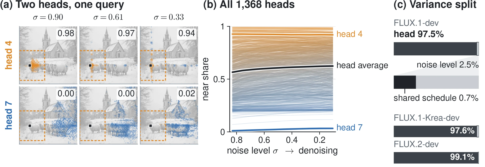
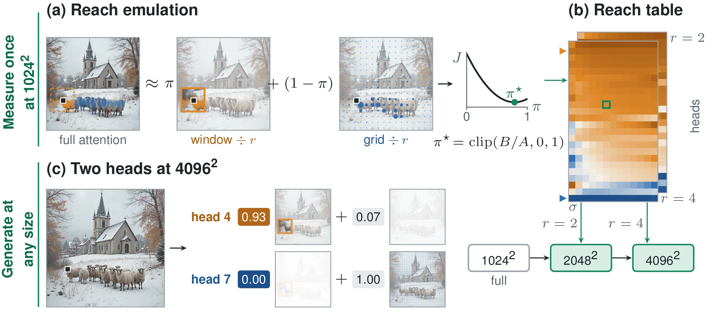
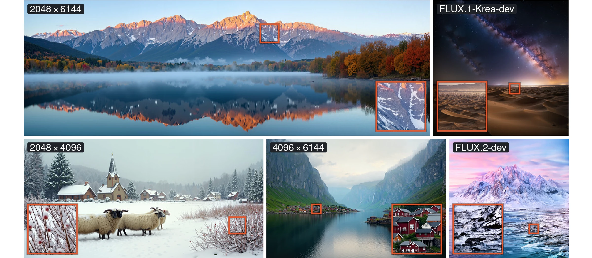

Measured once at 1024², reused at 4096², no training
Reach Is a Property of the Head
Scale-Covariant Attention for High-Resolution Diffusion Transformers
49.2sper 4096² image on one GH200
4.1×faster than AReA
10of 10metrics better than AReA, at each of three seeds
The loop: three 4096² progressive SCA images zoomed to native pixels, the first three of the seeded draw behind the paper’s Figure 1 (one showcase prompt per category).
01The result
A 4096² image in 49.2 seconds
SCA replaces only the attention of FLUX.1-dev inside HRDiT’s sampler. It is 4.1× faster than AReA and better on all ten per-image metrics at each of three seeds and on HRGen-1K. Against HRDiT it is statistically indistinguishable on ImageReward, HPSv2.1 and PickScore, in 46% of HRDiT’s time.
Clean batch-1 medians on one idle GH200. ImageReward over AReA: +0.40 [0.32, 0.49], n = 195.
Abstract
Diffusion transformers trained near one megapixel can generate 4K images without retraining once their attention is adapted. Each such method must set how far every attention head looks, its reach, at a size the model never saw. Current methods share one schedule across heads or search a setting per size. We show that reach is a property of the head: at the training resolution of FLUX.1-dev, the head explains 97.5% of the variance of reach and the denoising step 2.5%. We introduce Scale-Covariant Attention (SCA), which mixes a native-size window and a native-size grid over the whole image with one number per head. Reach emulation fits that number once at 1024², where full attention still works, in closed form. Inside HRDiT’s sampler, SCA makes a 4096² image in 49.2 s, 4.1× faster than AReA, and beats AReA on all ten per-image metrics at three seeds. It is statistically indistinguishable from HRDiT on three preference scores in 46% of HRDiT’s time.
02The observation
Reach is a property of the head
Every training-free method must choose how far each head looks at a size the model never saw, where nothing can check the choice. At 1024², where full attention still works, we measured it for all 1,368 heads of FLUX.1-dev.
97.5%of its variance is the head
2.5%is the denoising step
0.7%is the curve shared by all heads, all one schedule can follow
FLUX.1-Krea-dev: 97.6% for the head; FLUX.2-dev: 99.1%.
Interactive: hover or tap a head

03The method
Two native-size views, one number per head
Each head mixes a near view and a far view, both at the trained size, with one weight: its reach.
1Two views
A native-size window and a native-size grid
The near view is a native-size window around the query, for edges and texture. The far view is a native-size grid over the whole image, for layout. Every offset in the window and the grid stays in the trained range, and the cost grows linearly with the pixel count.
Oi = πh Onear + (1 − πh) Ofar
Interactive: drag the query
At 4096²: 256² tokens, a 64² window (orange) and one grid key per 4 × 4 block (blue), to scale.
2Reach emulation
Measured once at 1024²
Full attention fails at 4096², so nothing there can score a weight. Shrinking both views by the target’s ratio r rebuilds its proportions at 1024², where the model’s own full attention is the reference; the best weight has a closed form.
J(π) = E − 2πB + π2A, π* = clip(B / A, 0, 1)
Interactive: move the weight
3One table
Read at any size and sampler stage
One pass over 32 prompts fills the table at ratios 2 and 4. In HRDiT’s sampler the 2048² stage reads ratio 2 and the 4096² stage ratio 4. Tables from disjoint prompt halves correlate at 0.989.
Interactive: step through the run
The reach table, all 1,368 heads. Move the noise level or switch the ratio: most heads keep their colour.

04See it
The whole image, at every decile of the gain
One prompt at each decile of progressive SCA’s paired ImageReward difference from AReA, beside AReA, UltraImage and HRDiT. AReA is ahead at the lowest deciles. Click an image to take all four to native pixels.
Nearest-rank deciles over all 195 prompts, seed 0, as in the paper’s decile figures.
Eight methods, one view
The same prompt and seed in every panel. Scroll or pinch to zoom and drag to pan: every method follows, down to native pixels.
Fifteen prompts: four from an earlier paper figure, eight chosen by hand for range of subject, three by seeded draw from the other 183.
05Any size, any checkpoint
One table per checkpoint serves every size
The table measured at 1024² drives other aspect ratios and checkpoints without refitting.

06How an image forms
Each image beside the run that made it
Each video replays one sample beside AReA on the same prompt and seed: the decoded estimate of the clean image at every step, the attention phase, and a native-pixel crop.
07Results
Better than AReA on all ten per-image metrics
FLUX.1-dev at 4096², 195 Aesthetic-4K prompts, 95% paired bootstrap intervals. Holm’s correction over the ten per-image metrics leaves every “all ten” claim intact.
+0.40ImageReward over AReA [0.32, 0.49], from 0.92 to 1.32
10/ 0better / worse than AReA after Holm, at seeds 0, 1, 2 and on HRGen-1K
2/ 0better / worse than HRDiT after Holm: HPSv2 and ARNIQA
46%of HRDiT’s time; three preference scores statistically indistinguishable
Main comparison at 4096²
Interactive: sort and switch metric groups
| Method | Steps | Time (s) ↓ | Image Reward ↑ | HPSv2.1 ↑ | Pick Score ↑ | CLIP ↑ | MUSIQc ↑ | FID ↓ | Patch FID ↓ | |
|---|---|---|---|---|---|---|---|---|---|---|
| clean | camp. | |||||||||
| Single pass, shared sampler (28 steps, guidance 4.5) | ||||||||||
| Full attention | 28 | 186.5 | 196.2 | −2.18 | 7.60 | 17.94 | 15.37 | 33.1 | 312.4 | 252.2 |
| DyPE | 28 | n/m | 195.9 | −0.10 | 20.55 | 20.51 | 24.92 | 50.3 | 205.5 | 171.9 |
| SEGA | 28 | n/m | 190.4 | 0.56 | 24.34 | 21.64 | 26.95 | 50.3 | 164.9 | 125.8 |
| AReA | 28 | 202.4 | 264.4 | 0.92 | 27.16 | 22.36 | 27.69 | 50.4 | 145.8 | 102.9 |
| Single-pass SCA (ours) | 28 | 77.1 | 78.4 | 1.25 | 29.73 | 23.12 | 29.14 | 60.1 | 140.2 | 98.4 |
| Multi-stage, own recipe and budget | ||||||||||
| UltraImage | 30+30 | n/m | 308.5 | 1.28 | 30.77 | 23.33 | 28.84 | 41.7 | 142.0 | 109.5 |
| HRDiT | 30+17+10 | 107.0 | 110.4 | 1.34 | 30.92 | 23.46 | 29.12 | 53.5 | 138.4 | 103.0 |
| Progressive SCA (ours) | 30+17+10 | 49.2 | 50.7 | 1.32 | 31.02 | 23.41 | 29.39 | 54.1 | 141.9 | 107.7 |
Both modes against AReA

Seconds per image against image side

Where it falls short
- Patch-level fidelityPatch FID is higher than HRDiT’s (+4.6 [0.6, 7.7]) and single-pass SCA’s (+9.2 [5.1, 13.2]); in its sampler, coarser weights have lower patch FID.
- Hand-set partsThe opening, window sizes and bridge are set by hand, the window sizes on a 46-prompt subset of the evaluation set; only the weights are measured.
- Larger sizesAt 6144² and 8192² the samples show block and stripe artifacts.
- Single passIn single-pass mode, small additional figures occasionally appear in scenes with people or animals; the progressive configuration reduces this to the level of the multi-stage baselines.
08In two minutes
The idea, start to finish
Go deeper
Every image, every table
96 prompts side by side
Five methods on a seeded draw of evaluation prompts, zoomable to native pixels.
OpenGallery
All showcase images, fifteen eight-method comparisons, the first twelve evaluation prompts.
OpenAll results and protocol
Every metric with its interval, timing, the method in detail, limitations.
Open ExploratoryOther backbones
FLUX.2-dev, Qwen-Image and Ideogram 4.0; outside the paper’s claims.
OpenCitation
@article{sca2026,
title = {Reach Is a Property of the Head: Scale-Covariant
Attention for High-Resolution Diffusion Transformers},
author = {Anonymous},
journal = {Under review},
year = {2026}
}